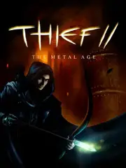

Thief II: The Metal Age
Thief II: The Metal Age
Detalles
 |
|
| Tiempo de juego | 51m 59s |
| Última actividad | 28/12/2025 20:16:14 |
| Añadido | 26/4/2025 1:40:24 |
| Modificado | 10/12/2025 13:53:17 |
| Estado de finalización | Jugado |
| Librería | Playnite |
| Fuente | |
| Plataforma | PC (Windows) |
| Fecha de lanzamiento | 21/3/2000 |
| Puntuación de la Comunidad | 87 |
| Puntuación de la Crítica | 90 |
| Puntuación de usuario | |
| Género | Adventure Shooter Simulator |
| Desarrollador | Looking Glass Studios |
| Editor | Eidos Interactive Eidos Montréal Square Enix |
| Característica | Single Player |
| Enlaces | Steam GOG |
| Tag | |
Descripción
La Era del Metal y las Sombras
El capo del sigilo vuelve a las calles y tejados de una Ciudad que ya no es la misma. Las sombras siguen siendo su dominio, pero ahora resuenan con el avance de una nueva facción obsesionada con la tecnología, llenando la ciudad de ruidosas máquinas, mecanismos complejos y una vigilancia cada vez mayor. Él, que solo quiere seguir con lo suyo, se ve arrastrado a desenterrar un siniestro complot que amenaza con cambiar el futuro de la metrópolis para siempre.
Esta aventura toma la fórmula pionera del sigilo en primera persona y la perfecciona en casi todos los aspectos. Las reglas siguen siendo las mismas: la invisibilidad en las sombras y el silencio absoluto son vitales. Pero los niveles son más ambiciosos, ofreciendo laberintos urbanos y mecánicos con múltiples caminos y oportunidades para infiltrarte. Tenés nuevos artilugios ingeniosos para sortear guardias humanos y enfrentarte (si es estrictamente necesario) a las nuevas amenazas mecánicas.
La ciudad se siente más detallada y viva, con un fuerte énfasis en los entornos urbanos y tecnológicos. La atmósfera gótica se mezcla ahora con el ruido y el vapor de las máquinas, creando un tono distintivo. Es una secuela que se considera por muchos la cumbre del género, ofreciendo una jugabilidad de sigilo increíblemente pulida y un diseño de niveles magistral.
AddOns
+ HD Mod+ TafferPatcher
+ Traducción al Español